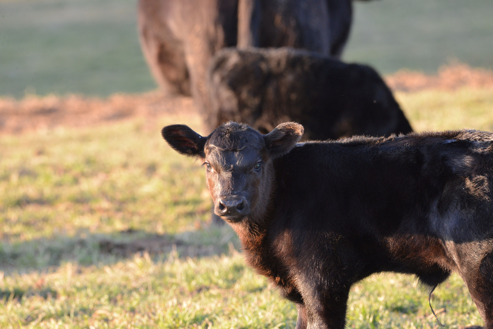

Our Methods
At Knapp Time Farm, our farming methods are grounded in three core pillars that reflect our commitment to excellence and ethical practices:
- Animal Welfare: We prioritize the health and happiness of our livestock, ensuring they are treated with care and respect.
- Quality Products: By maintaining high standards in animal welfare, we produce meats of exceptional quality.
- Ethical Farming: Our approach to farming is guided by a strong moral compass rooted in Faith, emphasizing sustainability and responsibility.
At Knapp Time Farm, we are dedicated to providing not only the highest quality meats but also to maintaining the highest standards of animal welfare. Our commitment to ethical farming starts with respect and compassion for our animals. We believe that the well-being of our livestock is paramount, not only because it's the right thing to do, but also because it directly contributes to the quality of our products.